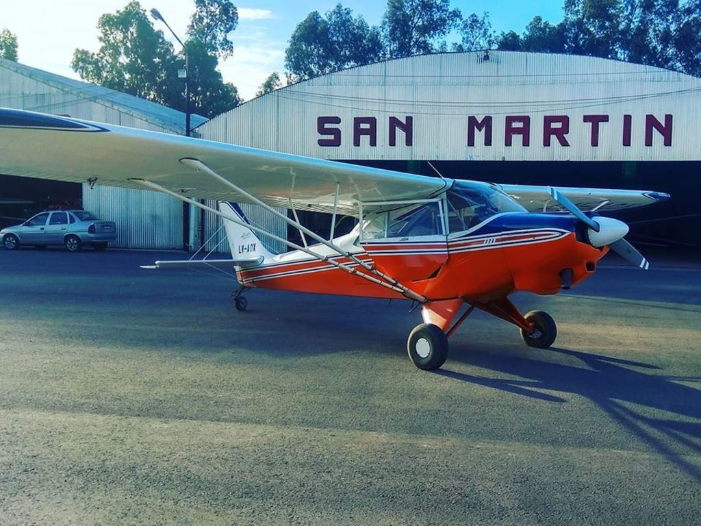

Bienvenidos
El Aero Club San Martín fue fundado el 12 de mayo de 1945 con el propósito expreso de difundir la actividad aeronaútica y la práctica aerodeportiva en el Este de la Provincia de Mendoza.
Desde entonces y hasta la fecha ha desarrollado su actividad en forma ininterrumpida, trazando el aeródromo San Martín, donde tiene asiento, y erigiendo la totalidad de la infraestructura aeronáutica existente en el Departamento General San Martín.
Testimonios
Ahí aprendí a volar!
Capitán Sully
Muy cálida la atención
Maverick